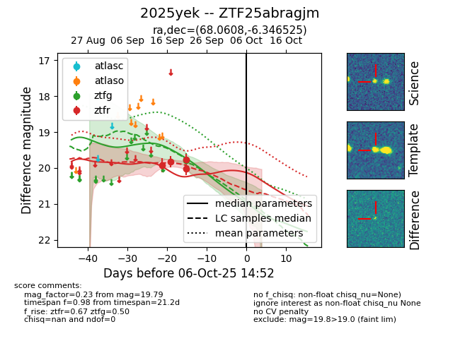
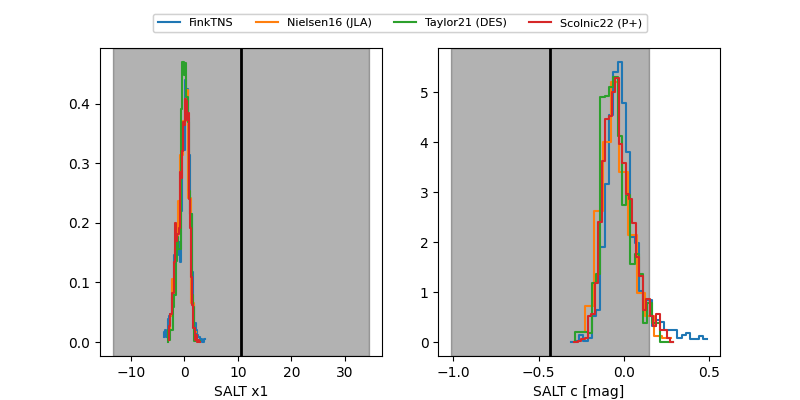

FINK: ZTF25abragjm
Lasair: ZTF25abragjm
ALeRCE: ZTF25abragjm
TNS: 2025yek
YSE: 2025yek
ZTF25abragjm (ztf,fink)
2025yek (tns,yse)
equatorial (ra, dec) = (68.0608,-6.34652)
galactic (l, b) = (201.8229,-33.72479)


last ztfg=19.79, ztfr=20.01
1 ztfg, 4 ztfr detections